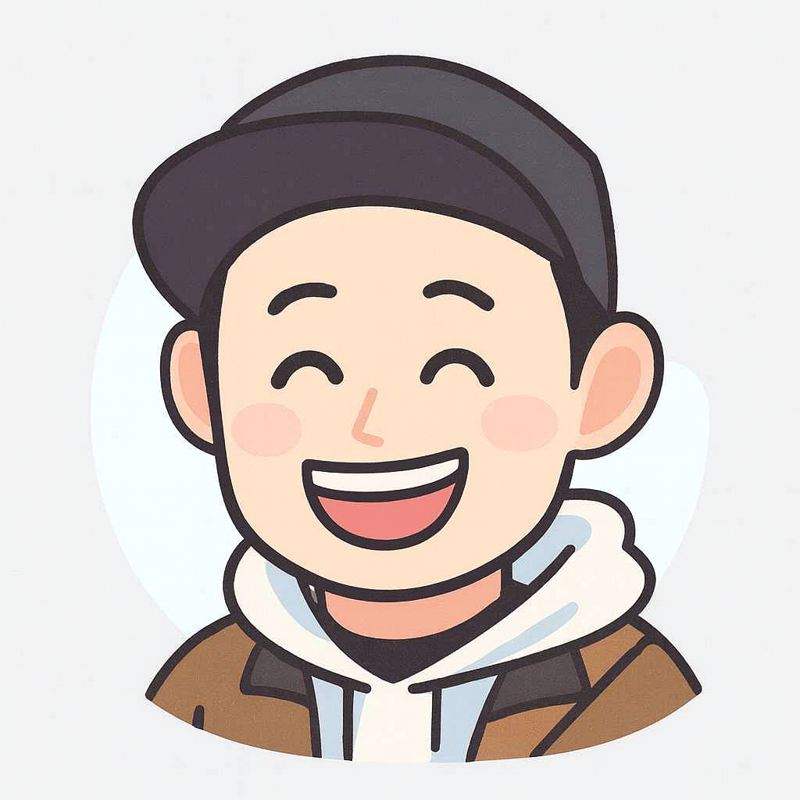

About Me
タケシ / Web修正・サポート対応
クラウドワークスを中心にWeb制作のサポート業務を行っています。「新しくテキストを書き換えたい」「画像の差し替えができない」「少しレイアウトが崩れて困っている」といった、ちょっとしたWebサイトのお困りごとを、丁寧なコミュニケーションと確実な作業でお手伝いいたします。
Skills & Support
HTML / CSS
Webサイトの文字・レイアウト調整
既存サイトのテキスト修正、リンクの差し替え、レスポンシブ（スマホ表示）の崩れチェックなど、部分的な改修・調整に柔軟に対応します。
AI Direction
AIツールを活用した迅速なサポート
ChatGPTなどの最新AIツールを仕様整理やコードの最終チェックに活用。人の手による確認と組み合わせることで、スピーディーかつ確実な対応を実現しています。
CMS & Tools
WordPress / GitHub
WordPressブログの記事投稿やプラグイン導入、GitHubを用いた安全なソースコード管理に対応。制作物のデータを消失リスクから守ります。
Works
これまでの対応事例と、Web改修の具体的なイメージです（守秘義務のため一部抽象化しています）。
お知らせ・テキストの迅速修正
対応スピード：即日〜スピード対応可
[解決後] 即日中に指定箇所をセマンティックなコードで書き換え、スマホ表示にズレがないかも徹底確認して納品しました。
急ぎのご依頼にもできる限りスピーディーに対応することを心がけています。
バナー画像差し替え＆リンク更新
対応スピード：ご相談内容に応じて柔軟に対応
[解決後] 指定画像を最適な容量に軽量化して差し替え。リンク切れや、意図しないレイアウト崩れが起きないよう丁寧に対処しました。
ただ画像を差し替えるだけでなく、表示速度やレイアウトへの影響まで配慮した丁寧な作業を心がけています。
Contact
ちょっとしたWebサイトの修正、更新作業の代行など、お気軽にご相談ください。
ご依頼やご相談は、以下のクラウドワークスのプロフィールよりお気軽にお声がけください！
クラウドワークスで相談する